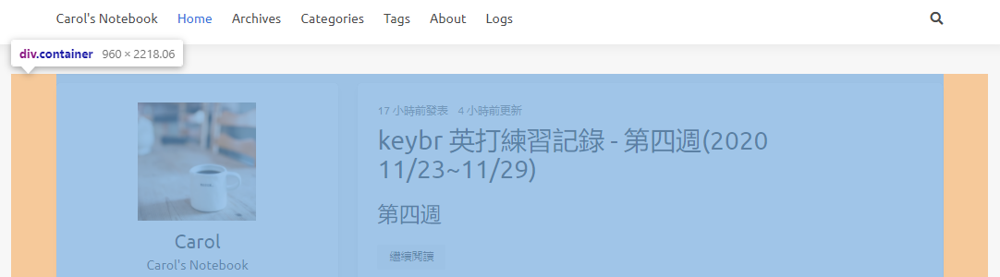
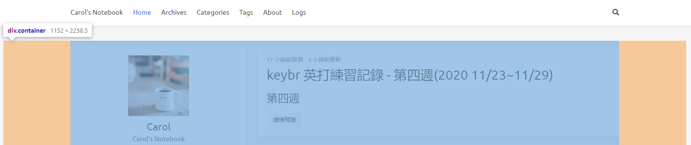
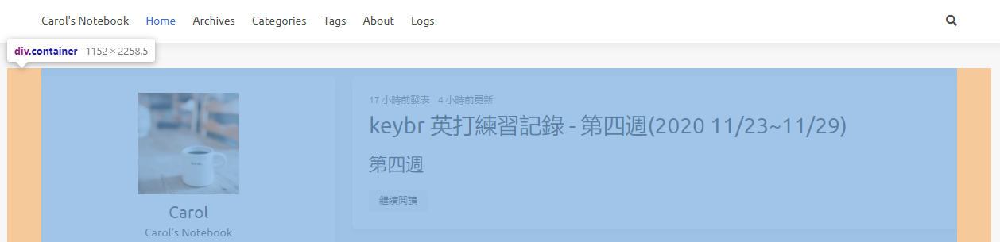
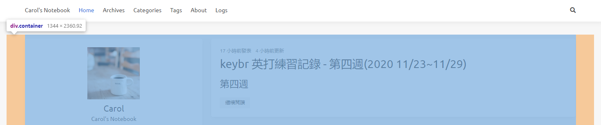
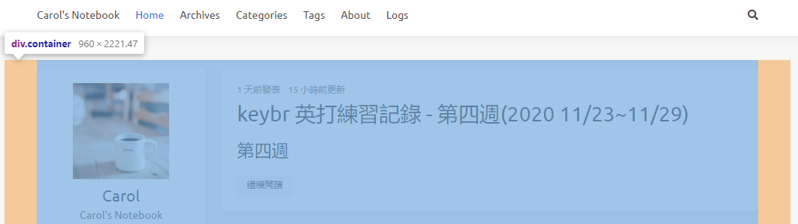
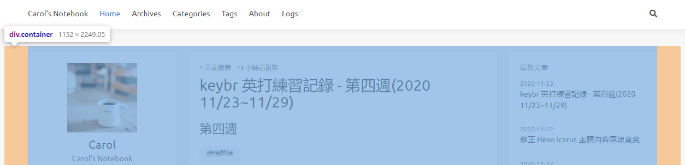
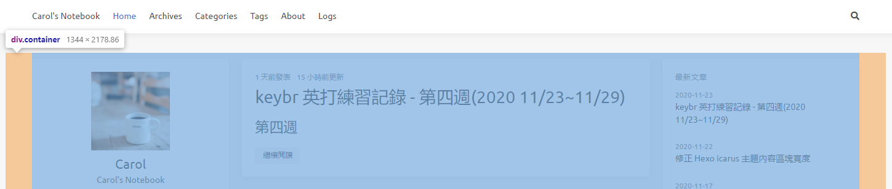
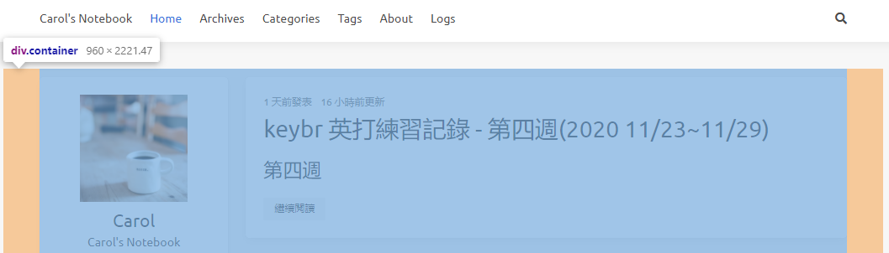
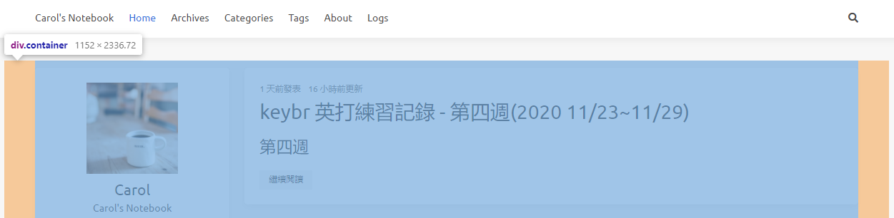
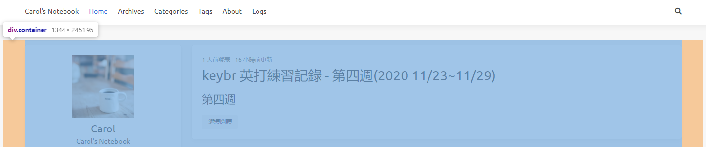

[Hexo] Icarus 主題 - 內容區塊寬度
套用 Hexo icarus 主題後，一直覺得文章區塊寬度太窄，造成圖片常是縮小的，很不清晰，查了官方 GitHub issues 及一些部落格，分享最後我的解決方法~
一、撰寫環境
- hexo 5.2.0
- hexo-cli 4.2.0
- icarus 4.0.1
二、查看預設寬度
首先我們可以到 themes/icarus/include/style/base.styl 檔案中，來看官方預設的寬度變數
1 | $gap ?= 64px |
三、更改內容區塊響應式寬度
官方在 themes/icarus/include/style/responseive.styl 檔案中，採用了 base.styl 的寬度變數
1 | +widescreen() |
- 瀏覽器寬度 $widescreen (1280px) 以上，內容區塊總和為 $desktop (1088px) 減去間隙
1088 - (64*2) = 960px

- 瀏覽器寬度 $fullhd (1472px) 以上，內容區塊總和為 $widescreen (1280px) 減去間隙
1280 - (64*2) = 1152px

修改內容區塊寬度
接下就是修改程式碼來放寬內容區塊寬度，以下是修改後：
1 | +widescreen() |
修改後的內容寬度如下：
瀏覽器寬度 $widescreen (1280px) 以上，內容區塊總和為 $widescreen (1280px) 減去間隙
1280 - (64*2) = 1152px
瀏覽器寬度 $fullhd (1472px) 以上，內容區塊總和為 $fullhd (1472px) 減去間隙
1472 - (64*2) = 1344px
四、修改側欄及文章區塊所佔網格比例
放寬內容區塊(側欄加文章區塊)後，再來就是修改側欄以及文章區塊所佔的網格比，讓側欄變窄，中間文章區塊變寬
預設側欄(兩側)所佔的網格比，可在 themes/icarus/layout/common/widgets.jsx 檔案中看到
- case 2 指有兩個欄位(一個側欄及文章區塊)時，側欄所占網格
- case 3 指有三個欄位(二個側欄及文章區塊)，側欄所占網格
1 | function getColumnSizeClass(columnCount) { |
預設文章區塊所佔的網格比，則可在 themes/icarus/layout/layout.jsx 檔案中看到
- columnCount === 2 指有兩個欄位(一個側欄及文章區塊)時，文章區塊所占網格
- columnCount === 3 指有三個欄位(二個側欄及文章區塊)，文章區塊所占網格
1 | <div class={classname({ |
注意一：
因為採用12網格布局，側欄與文章區塊相加起來要 12
例如：
widgets.jsx 的 case 2 is-4-widescreen 搭配 layout.jsx 的 columnCount === 2 is-8-widescreen
4 + 8 = 12注意二：
設定 3 欄時，瀏覽器寬度為 $widescreen (1280px) 以下時，右側欄會移至左側下方
case 3 is-4-widescreen 有兩個側欄位，所以要乘以 2，再去加上文章區塊寬度
widgets.jsx 的 case 3 is-3-widescreen 搭配 layout.jsx 的 columnCount === 3 is-6-widescreen
3*2 + 6 = 12case 3 is-8-desktop 則因當瀏覽器寬度為 $widescreen 以下，右側欄會移至左側下方，只會呈現 2 欄，所以只要像 2 欄一樣計算就可
widgets.jsx 的 case 3 is-4-desktop 搭配 layout.jsx 的 columnCount === 3 is-8-desktop
4 + 8 = 12
修改文章區塊與側欄區塊比例
接下來我們要放寬文章區塊，減少側欄區塊寬度
在 themes/icarus/layout/common/widgets.jsx，修改側欄(兩側)所佔的網格比
1 | function getColumnSizeClass(columnCount) { |
在 themes/icarus/layout/layout.jsx，修改文章區塊所佔的網格比
1 | <div class={classname({ |
五、最終修改後
3 欄
- $desktop (1088px) 以上，低於 $widescreen (1280px) (只要瀏覽器寬度低於 $widescreen (1280px)，右側欄會移至左側下方，只會呈現 2 欄)

- $widescreen (1280px) 以上，低於 $fullhd (1472px)

- $fullhd (1472px) 以上

2 欄
- $desktop (1088px) 以上，低於 $widescreen (1280px)

- $widescreen (1280px) 以上，低於 $fullhd (1472px)

- $fullhd (1472px) 以上
